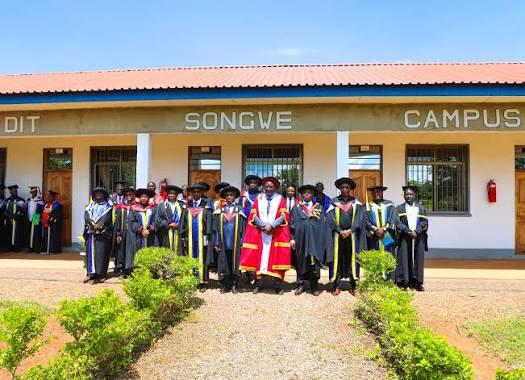
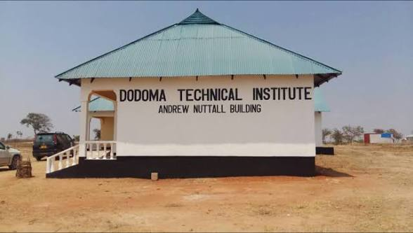

Our Campuses
Four campuses across Tanzania, each with a unique focus and character
Main Campus
📍 Junction of Morogoro Road and Bibi Titi Mohamed Street, Dar es Salaam
The heart of DIT. This campus houses the institute's administration and offers undergraduate and postgraduate engineering programs including Civil, Computer, Electrical, Mechanical, and Electronics & Telecommunications.
Visit Main Campus →
Mwanza Campus
📍 Mwanza Region
Specializing in regional development. This campus focuses on Laboratory Science and Leather Technology, serving the unique industrial needs of the Lake Zone region.
Visit Mwanza Campus →
Songwe Campus (Myunga)
📍 Songwe Region
Building the Southern Highlands. This campus offers technical and vocational skills training in Civil Engineering, Plumbing, and ICT to support development in the region.
Visit Songwe Campus →
Dodoma Campus
📍 Dodoma Region
Bridging vocational training. This campus is dedicated to skills development for secondary school graduates transitioning from vocational training centers to higher technical education.
Visit Dodoma Campus →